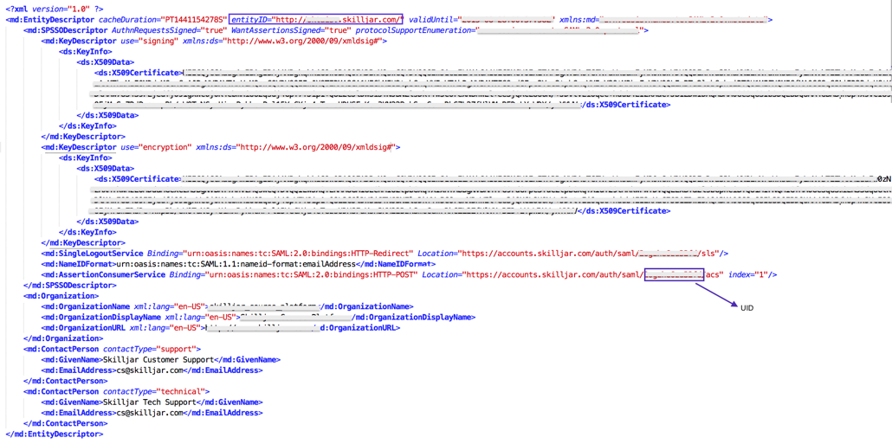
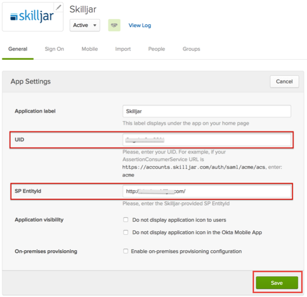

Send an email to Skilljar and request that they enable SAML 2.0 for your account. Include the following information:
IDP Metadata Link: Save this file and then attach:
Sign into the Okta Admin dashboard to generate this value.
IDP Issuer/Entity ID: Copy and paste the following:
Sign into the Okta Admin Dashboard to generate this variable.
x509 Certificate: Copy and paste the following certificate in PEM text format:
Sign into the Okta Admin Dashboard to generate this variable.
Login URL/SignOn URL: Copy and paste the following:
Sign into the Okta Admin Dashboard to generate this variable.
Skilljar will provide you with the SP Metadata xml. An example SP Metadata xml is shown below with necessary values highlighted.
Take note of the values for UID and SP Entity ID.

In Okta, select the General tab for the Skilljar app.
Enter the values you noted from the SP metadata xml file into the corresponding UID (enter the AssertionConsumerService value here) and SP Entity ID fields.
Click Save.

Done!
Notes:
SP-initiated flows, IdP-initiated flows, and Just In Time (JIT) provisioning are all supported.